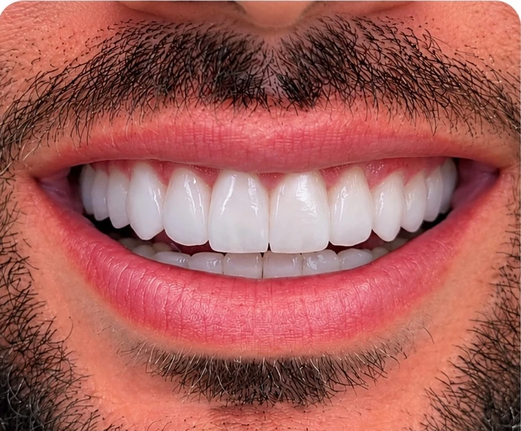
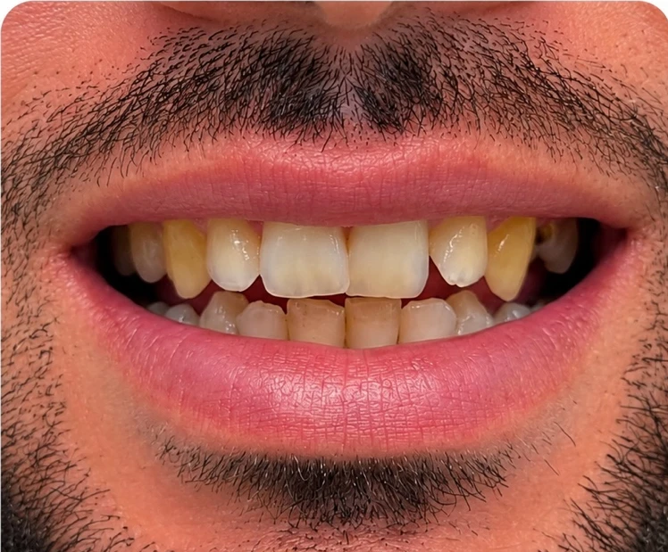

Chirurgie dentaire · casablancaVotre sourire.
Votre sourire.
Une nouvelle perspective.
Un espace dédié à votre santé bucco-dentaire, à votre confort et à une meilleure compréhension de vos soins.
LA VILLETTE · CASABLANCA
↓ DÉCOUVRIR
Dr Anas LaasryChirurgien dentiste
01 Écoute02 Information03 Accompagnement
01 / le cabinetLa confiance commence
La confiance commence
par la rencontre.
Découvrez le cabinet dentaire Laasry Anas à Casablanca. Nous vous accompagnons avec une approche attentive, des explications claires et un parcours de consultation pensé autour de vos besoins.
Prendre rendez-vous ↗Explorez votre sourire.
Choisissez une zone de la dentition pour découvrir des informations générales. Les informations présentées vous aident à mieux comprendre les différentes possibilités de soins.
MODÈLE INTERACTIF01 — DENTITION
Glissez pour tourner
Chaque sourire a
son histoire.
Explorez différents exemples visuels pour mieux comprendre les possibilités esthétiques.


↔
01 / 04
Illustrations visuelles à vocation informative, ne représentant pas des résultats cliniques de patients. Les résultats varient selon chaque situation.
Comprendre les soins en mouvement.
Explorez le principe de trois techniques dentaires. Découvrez les grandes étapes des traitements grâce à nos représentations pédagogiques en 3D.
Implant dentaire
Prendre rendez-vous ↗Une visite, étape par étape.
Prendre contact
Choisissez le soin qui vous intéresse et indiquez vos disponibilités.
Échanger
Discutez de vos attentes avec le praticien.
Comprendre
Recevez des explications adaptées à votre situation lors de la consultation.
Votre avis compte.
Découvrez les retours et les expériences partagés sur la fiche Google du cabinet.
Un accompagnement qui commence par l’écoute.
Votre expérience nous aide à améliorer chaque étape de votre accueil.
Découvrir les avis sur Google ↗Avant votre visite.
Que préparer pour une première consultation ?
Apportez vos documents dentaires utiles et préparez vos questions. Signalez vos traitements et allergies au praticien.
Comment entretenir mon sourire au quotidien ?
Un brossage régulier avec un dentifrice fluoré et un nettoyage interdentaire adapté contribuent à la santé bucco-dentaire.
Le comparateur permet-il de prévoir mon résultat ?
Non. Chaque situation est différente et nécessite une évaluation individuelle.
08 / contactVotre plus beau sourire
Votre plus beau sourire
commence ici.
Un premier rendez-vous, une attention personnalisée, un accompagnement à chaque étape.
1 Rue Zineb Ishak, Casablanca 20380, Maroc
Retrouvez-nous sur les réseaux ↗Écrire au cabinet sur WhatsApp ↗
Pour connaître les horaires de consultation, contactez notre équipe.
Notre attention se prolonge au-delà des soins.
Retrouvez les moyens de contacter le cabinet pour organiser la suite de vos soins.
Mon rendez-vous
Demander une confirmation ou un changement de date.
Contacter mon cabinet ↗Après mes soins
Organiser un contrôle ou demander à parler au praticien.
Demander un suivi ↗Mes consignes
Suivez les instructions personnalisées remises par votre praticien. En cas de difficulté à respirer ou avaler, contactez les urgences.
Demander un rappel ↗Cet espace ne donne pas accès à un dossier patient et ne permet pas de consulter un statut de rendez-vous en temps réel.